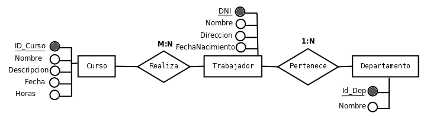

Actividad 3.6.
Crea una base de datos nueva llamada Empresa en donde crearás tres tablas, las necesarias para implementar en LibreOffice Base el problema de la práctica guiada del apartado 2.3.

Piensa qué tipo de datos debes de elegir para cada campo así como la longitud idónea para los datos que se deban introducir.
Asigna la clave principal al campo adecuado y crea las relaciones necesarias.